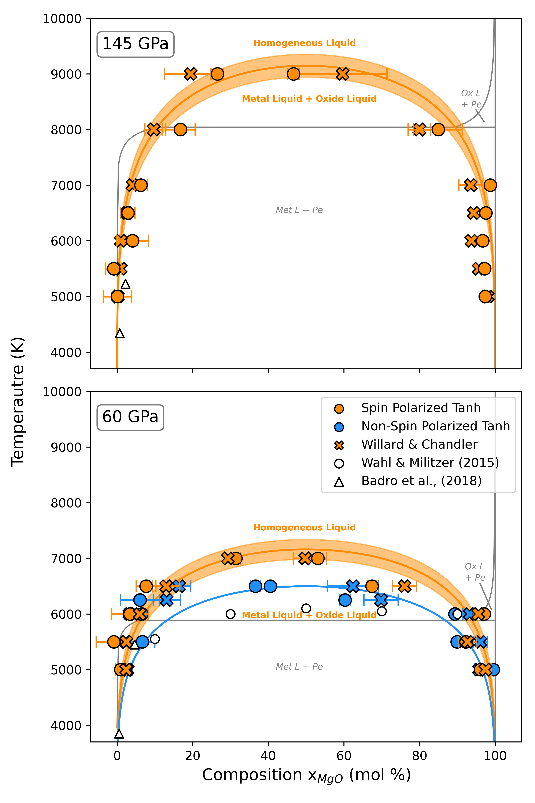

MgO Miscibility in Liquid Iron
View PublicationThis project uses Density Functional Theory (DFT) through the usage of VASP to study lithophile-core interactions in Earth's early history.


Objectives
- Characterize Two-Phase Interface
- Lithophile-Core Interaction
- Phase Diagram Methodology
← Back to Home